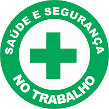

🌍 Saúde e Segurança do trabalho
"A saúde e segurança do trabalho são pilares essenciais para garantir ambientes laborais protegidos, prevenindo riscos e promovendo o bem-estar de todos os colaboradores diariamente."
Prevenção é a Melhor Solução: Segurança Começa com Atitudes Simples
Quando falamos em segurança do trabalho, uma verdade sempre se destaca: prevenir é melhor do que remediar. Acidentes não avisam quando vão acontecer — por isso, a prevenção precisa fazer parte da rotina de todos os colaboradores, independentemente do setor ou da função. A maioria dos acidentes poderia ser evitada com atitudes simples e conscientes, como o uso correto dos Equipamentos de Proteção Individual (EPIs), o cuidado com a sinalização de áreas de risco, a manutenção adequada de ferramentas e máquinas, e a atenção redobrada ao executar tarefas rotineiras. Mais do que cumprir regras, a prevenção envolve cultura, responsabilidade e compromisso com a própria vida e a dos colegas. Um chão molhado sem aviso, um equipamento usado de forma inadequada ou um procedimento ignorado por pressa podem parecer inofensivos no momento, mas são fatores que, somados, geram consequências graves. Por isso, cada atitude preventiva conta. Respeite os procedimentos. Siga as orientações da CIPA e do SESMT. Participe dos treinamentos. Questione o que não parece seguro. E, acima de tudo, não subestime os riscos. A segurança no trabalho é construída todos os dias, com atenção, cuidado e cooperação. Evitar um acidente hoje pode salvar uma vida amanhã — e essa vida pode ser a sua.

A Saúde e Segurança do Trabalho (SST) é um conjunto de práticas, normas e medidas adotadas com o objetivo de proteger a integridade física e mental dos trabalhadores durante o desempenho de suas atividades profissionais. Sua importância vai além do cumprimento das leis trabalhistas, pois está diretamente relacionada à promoção do bem-estar, à prevenção de acidentes e doenças ocupacionais, e à melhoria da qualidade de vida no ambiente de trabalho. Com a crescente valorização do capital humano, as organizações passaram a compreender que ambientes seguros e saudáveis contribuem para o aumento da produtividade, redução de custos com afastamentos e elevação da motivação dos colaboradores. Dessa forma, a SST tornou-se uma área estratégica dentro das empresas, exigindo a atuação de profissionais especializados e o envolvimento de todos os níveis hierárquicos. Assim, discutir saúde e segurança do trabalho é refletir sobre condições dignas de trabalho, respeito aos direitos dos trabalhadores e responsabilidade social. A adoção de uma cultura prevencionista é essencial para a construção de ambientes laborais mais seguros, humanos e eficientes.